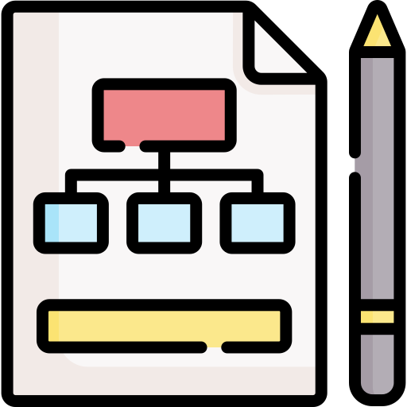

<div  [ngClass]="stateDarkMode ? 'div__encaminha' : 'div__encaminha-dark'">
  <button routerLink="/solicitacoes" type="button" data-bs-toggle="tooltip" data-bs-placement="top" title="Solicitações">
    
  </button>
  <button routerLink="/historia" type="button"  data-bs-toggle="tooltip" data-bs-placement="top" title="História">
    
  </button>
</div>


